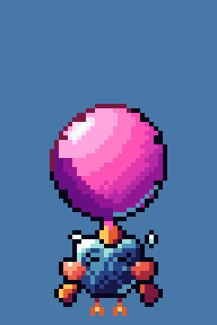
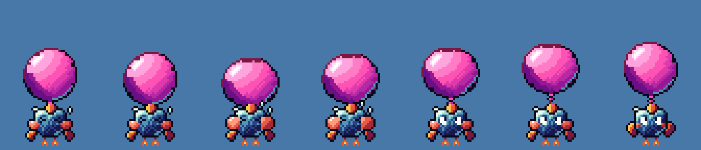

Bubble pop 2 to 1: bob instead of vanish
Mock-up composed from the sheet art and the bob table (not an emulator capture; bubble column and draw order are approximate). Slow motion: 3 times slower than the game. The 20 frame protection blink after a pop is not shown.
Before: the bubble is gone for 8 frames
After: the bubble stays, is pushed in 5 pixels, rebounds 2 above rest, settles (17 frames)

After, frame by frame (bubble offset in pixels, down is positive: 2, 4, 5, 3, 0, -2, -1)
